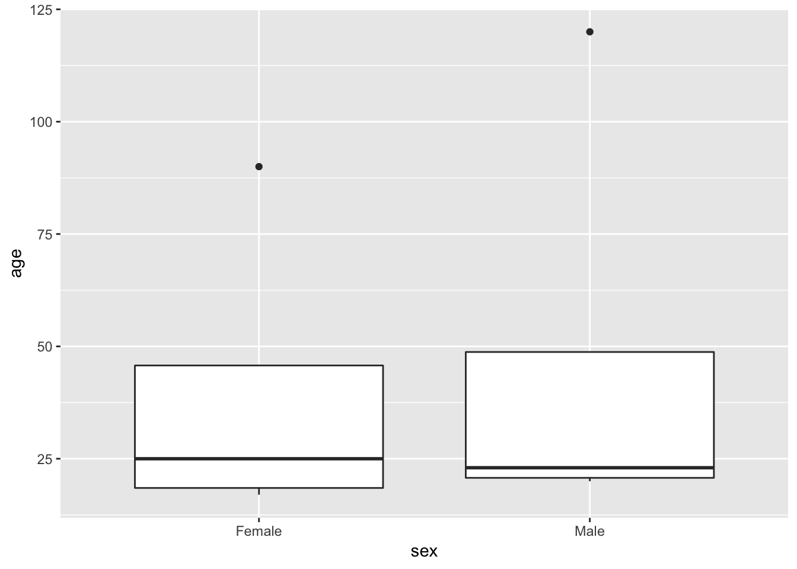
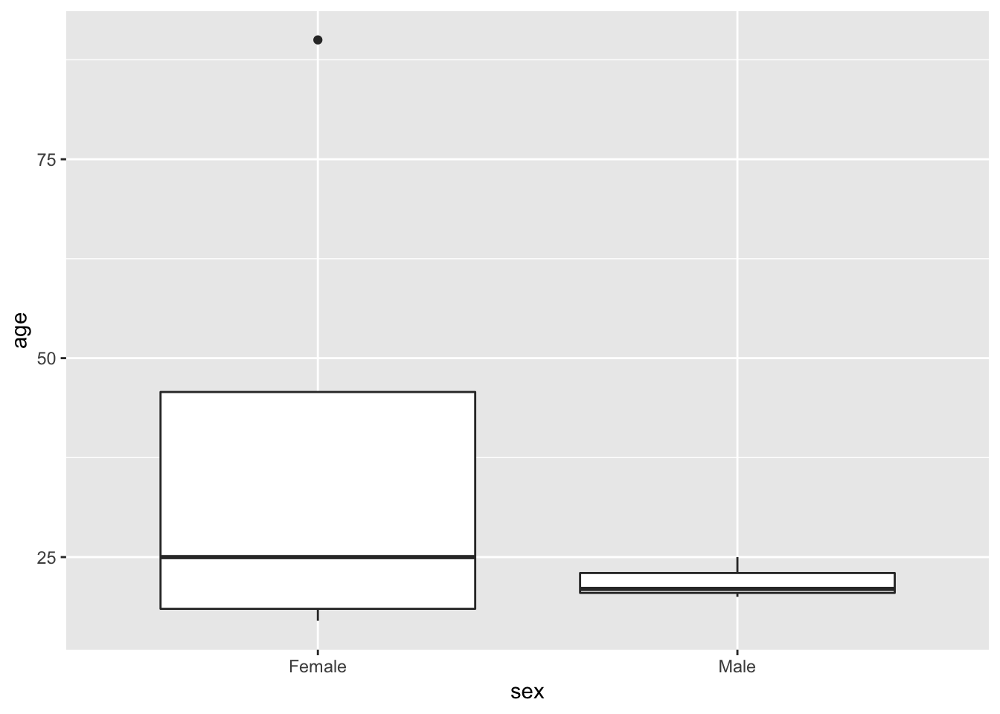
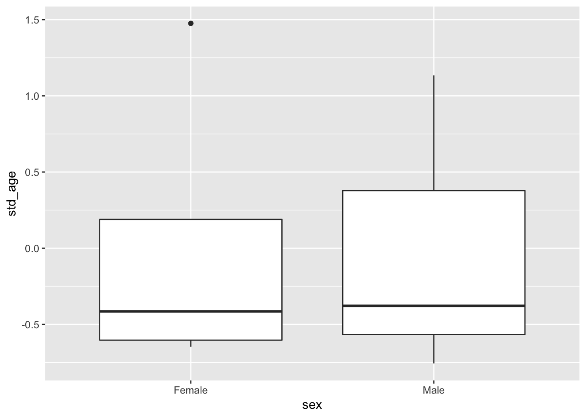
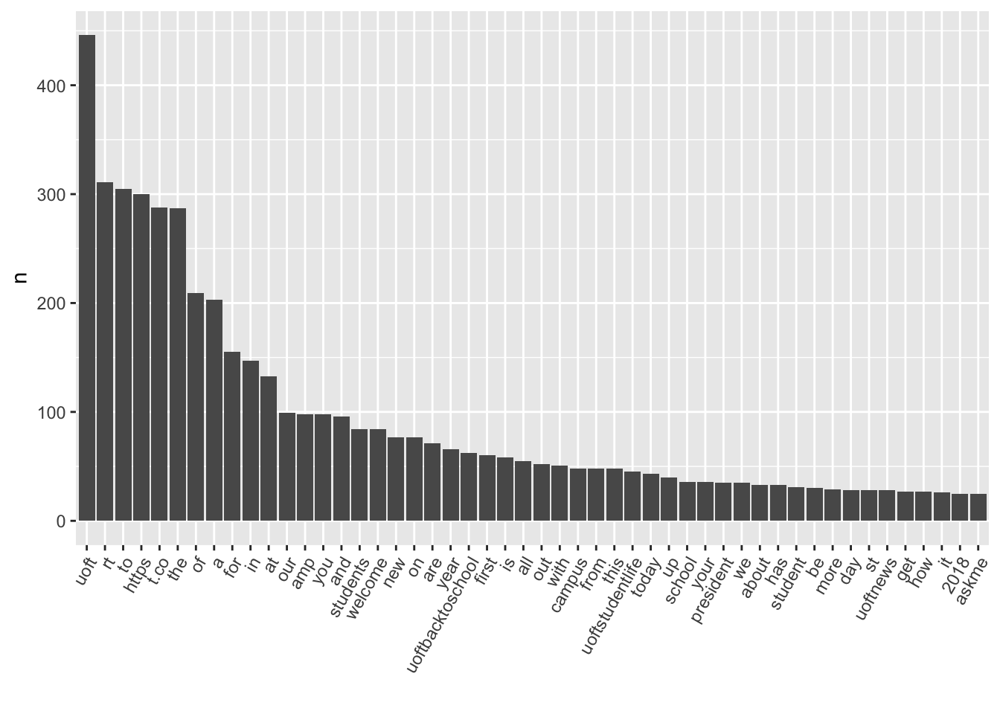
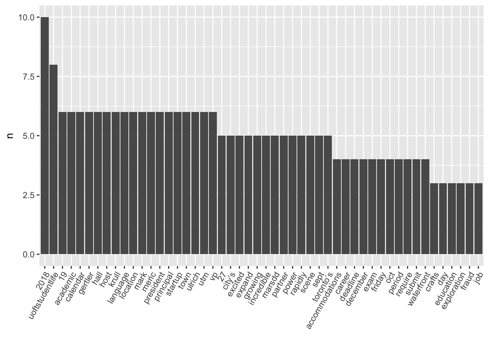
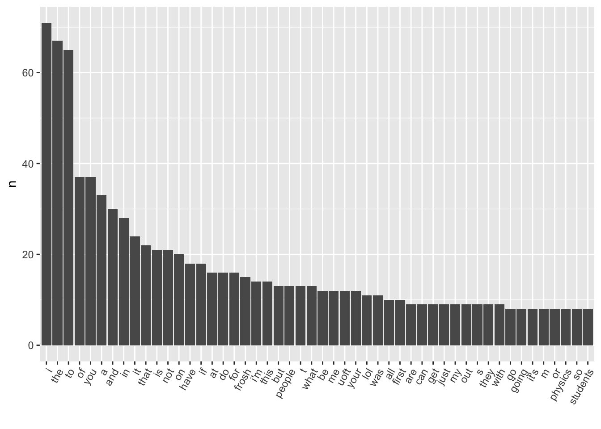
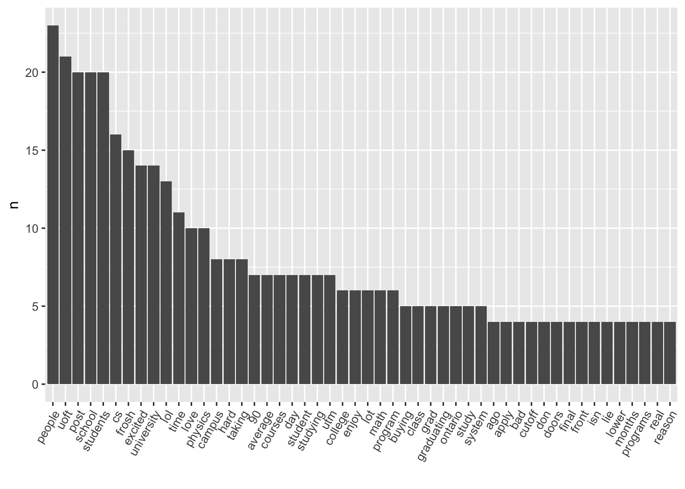
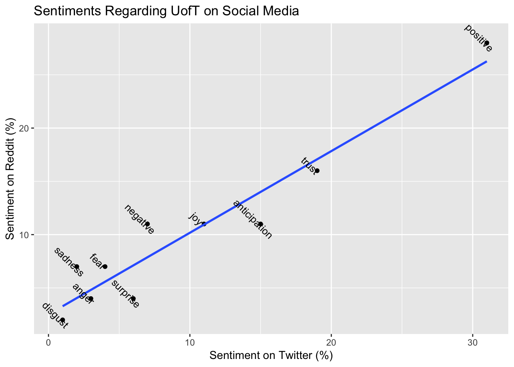

STA2453 - Data Science, Collaboration, and Communication
Course Overview
The primary learning objectives are:
- to gain experience using data analysis to extract information.
- to gain experience communicating information that arise from a data analysis.
Computational Notebooks
Lots of users love them …
But, not everyone …

What is data analysis?
These quotes are from Tukey’s 1962 paper, The Future of Data Analysis.
… data analysis, which I take to include, among other things: procedures for analyzing data, techniques for interpreting the results of such procedures, ways of planning the gathering of data to make its analysis easier, more precise or more accurate, and all the machinery and results of (mathematical) statistics which apply to analyzing data.
Data analysis … take on the chracteristics of a science rather than those of mathematics …
… give general advice about the use of techniques as soon as there is reasonable ground to think the advice is sound; be prepared for a reasonable fraction (not too large) of cases of such advice to be generally wrong.
Pure mathematics differs from most human endevor in that assumptions are not criticized because of thier relation to something outside, though they are …often critized as unasthetic or as as unnecessarily strong …
In data analysis we must look to a very heavy emphasis on judgement …
(a1) judgement based upon the experience of the particular field of subject matter from which the data come,
(a2) judgement based upon a broad experience with how particular techniques of data analysis have worked in a variety of fields of application,
(a3) judgement based upon abstract results about the properties of particular techniques, whether obtained by mathematical proofs or empirical sampling.

- Roger Peng states that
If one were to write down the steps in a data analysis, you might come up with something along these lines of the following list
- Defining the question
- Defining the ideal dataset
- Determining what data you can access
- Obtaining the data
- Cleaning the data
- Exploratory data analysis
- Statistical prediction/modeling
- Interpretation of results
- Challenging of results
- Synthesis and write up
- Creating reproducible code
Computing
I use R with RStudio and suggest that you do to the same.
Python is an option, but I won’t be able to support you to the same degree as I can in R.
I expect that all work will be done in a “reproducible” manner.
Data aquisition
- Experiment
- Observational study
Data cleaning and wrangling
- Data cleaning example
agedat <- tibble(age = c(25, 20, 21, 120, 19, 31, 90, 17), sex = c(rep("Male", 4), rep("Female", 4)))
ggplot(agedat, aes(sex, age)) + geom_boxplot()
agedat_clean <- filter(agedat, age <= 100) # remove age > 100
ggplot(agedat_clean, aes(sex, age)) + geom_boxplot()
- Data wrangling (transformation, etc.)
agedat_std <- agedat_clean %>%
group_by(sex) %>%
summarise(mean=mean(age),sd = sd(age)) %>%
full_join(agedat_clean) %>%
mutate(std_age = (age-mean)/sd)
ggplot(agedat_std,aes(sex,std_age)) + geom_boxplot()
Methods
We won’t be learning about any particular methods in this course.
I expect that you are familiar with:
Basic concepts in inference such as confidence interval, p-value, and prediction.
Application of basic statistical methods used for inference (e.g., general linear models), and prediction (e.g., linear and logistic regression) using a programming language such as R or Python.
Open to learning new methods techniques with minimal guidance.
Data analysis - Case study
Introduction
The UofT administration is intrested in learning about what people are saying about UofT on social media platforms. What type of image does the University of Toronto (UofT) on social media?
Data Collection - Twitter
Twitter posts (tweets) were searched for the hashtag “#UofT”. The tweets were restricted to the time period 2017-09-05 thru 2017-09-11 and users were located within 50km of the University of Toronto St. George campus.
# Set Twitter API credentials.
library(twitteR)
library(tidytext)
consumer_key <- consumer_key_nt
consumer_secret <- consumer_secret_nt
access_token <- access_token_nt
access_secret <- access_secret_nt
setup_twitter_oauth(consumer_key, consumer_secret, access_token, access_secret)## [1] "Using direct authentication"# Search Twitter
fn_twitter <- searchTwitter("#UofT", n = 50, lang = "en", since = '2018-09-19')
fn_twitter_df <- twListToDF(fn_twitter) # Convert to data frameData Cleaning and Wrangling - Twitter
The words within each Tweet were tokenized. The 50 most frequent words were plotted to check for uncommon words that might not be in the stop words database within the tidytext package. The stop words - common words in a language, were removed.
library(tidytext)
tweet_words <- fn_twitter_df %>% select(id, text) %>% unnest_tokens(word,text)
tweet_words %>% count(word,sort = T) %>% slice(1:50) %>%
ggplot(aes(x = reorder(word,
n, function(n) -n), y = n)) + geom_bar(stat = "identity") + theme(axis.text.x = element_text(angle = 60,
hjust = 1)) + xlab("")
# Create a list of stop words: a list of words that are not worth including
my_stop_words <- stop_words %>% select(-lexicon) %>%
bind_rows(data.frame(word = c("st","30","1","7","00","10","22","5","uoft","https", "t.co", "rt", "amp")))
tweet_words_interesting <- tweet_words %>% anti_join(my_stop_words)The distribution of words, from the remaining words, are shown in the histogram below.
Sentiment analysis was done using the tidytext package. See Silge, J. and Robinson, D. Text Mining with R
There are a variety of methods and disctionaries that exist for evaluating the opinion of emotion in text. The
tidytextpackage contains several sentiment lexicons in the sentiments dataset.
The
nrclexicon, from Saif Mohammad and Peter Turney, categorizes words in a binary fashion (“yes”/“no”) into categories of positive, negative, anger, anticipation, disgust, fear, joy, sadness, surprise, and trust.
The table below shows the number and frequency of words classified within each category.
library(tidytext)
tweet_words_interesting %>% group_by(word) %>% tally(sort=TRUE) %>% slice(1:50) %>% ggplot(aes(x = reorder(word,
n, function(n) -n), y = n)) + geom_bar(stat = "identity") + theme(axis.text.x = element_text(angle = 60,
hjust = 1)) + xlab("")
nrc_lex <- get_sentiments("nrc")
fn_sentiment <- tweet_words_interesting %>% left_join(nrc_lex)
sent_twitter <- fn_sentiment %>% filter(!is.na(sentiment)) %>% group_by(sentiment) %>% summarise(n=n())
sent_twitter$f <- round(100*sent_twitter$n/sum(sent_twitter$n))
knitr:: kable(arrange(sent_twitter,desc(f)))| sentiment | n | f |
|---|---|---|
| positive | 73 | 36 |
| trust | 44 | 22 |
| anticipation | 31 | 16 |
| joy | 22 | 11 |
| surprise | 14 | 7 |
| negative | 7 | 4 |
| anger | 3 | 2 |
| disgust | 3 | 2 |
| fear | 2 | 1 |
| sadness | 1 | 0 |
Data Cleaning and Wrangling - Reddit
Posts within the “subReddit” UofT were searched for “UofT”. The steps using Twitter posts were also followed for data cleaning and wrangling of the Reddit posts.
library(RedditExtractoR)
library(tidytext)
reddit_data <- get_reddit(search_terms = "uoft&restrict_sr=on&t=month", subreddit = "UofT", cn_threshold = 1)##
|
| | 0%
|
|=== | 4%
|
|===== | 8%
|
|======== | 12%
|
|========== | 16%
|
|============= | 20%
|
|================ | 24%
|
|================== | 28%
|
|===================== | 32%
|
|======================= | 36%
|
|========================== | 40%
|
|============================= | 44%
|
|=============================== | 48%
|
|================================== | 52%
|
|==================================== | 56%
|
|======================================= | 60%
|
|========================================== | 64%
|
|============================================ | 68%
|
|=============================================== | 72%
|
|================================================= | 76%
|
|==================================================== | 80%
|
|======================================================= | 84%
|
|========================================================= | 88%
|
|============================================================ | 92%
|
|============================================================== | 96%
|
|=================================================================| 100%reddit_data_sept2017 <- reddit_data %>% filter(as.Date(post_date,format="%d-%m-%y")>=as.Date("01-09-18",format="%d-%m-%y") & as.Date(post_date,format="%d-%m-%y") <=as.Date("07-09-18",format="%d-%m-%y") )reddit_words <- reddit_data_sept2017 %>% select(id, comment) %>% unnest_tokens(word,comment)
reddit_words %>% count(word,sort = T) %>% slice(1:50) %>%
ggplot(aes(x = reorder(word,
n, function(n) -n), y = n)) + geom_bar(stat = "identity") + theme(axis.text.x = element_text(angle = 60,
hjust = 1)) + xlab("")
# Create a list of stop words: a list of words that are not worth including
my_stop_words <- stop_words %>% select(-lexicon)
reddit_words_interesting <- reddit_words %>% anti_join(my_stop_words)
reddit_words_interesting %>% group_by(word) %>% tally(sort=TRUE) %>% slice(1:50) %>% ggplot(aes(x = reorder(word,
n, function(n) -n), y = n)) + geom_bar(stat = "identity") + theme(axis.text.x = element_text(angle = 60,
hjust = 1)) + xlab("")my_stop_words <- stop_words %>% select(-lexicon) %>%
bind_rows(data.frame(word = c("top","1","http", "2")))
reddit_words_interesting <- reddit_words %>% anti_join(my_stop_words)
reddit_words_interesting %>% group_by(word) %>% tally(sort=TRUE) %>% slice(1:50) %>% ggplot(aes(x = reorder(word,
n, function(n) -n), y = n)) + geom_bar(stat = "identity") + theme(axis.text.x = element_text(angle = 60,
hjust = 1)) + xlab("")
nrc_lex <- get_sentiments("nrc")
fn_sentiment <- reddit_words_interesting %>% left_join(nrc_lex)
sent_reddit <- fn_sentiment %>% filter(!is.na(sentiment)) %>% group_by(sentiment) %>% summarise(n=n())
sent_reddit$f <- round(100*sent_reddit$n/sum(sent_reddit$n))
knitr:: kable(arrange(sent_reddit,desc(f)))| sentiment | n | f |
|---|---|---|
| positive | 196 | 24 |
| trust | 131 | 16 |
| anticipation | 98 | 12 |
| negative | 93 | 12 |
| joy | 77 | 10 |
| fear | 45 | 6 |
| sadness | 48 | 6 |
| anger | 41 | 5 |
| surprise | 41 | 5 |
| disgust | 31 | 4 |
Combining Sentiment from Twitter and Reddit
Sentiment measured using the nrc lexicon was combined from Twitter and Reddit posts. The table displays the most frequent words appearing within each platform. A plot of the frequency of sentiment on Twitter versus Reddit with the least squares regression line is shown below.
comb_sent <- left_join(sent_twitter,sent_reddit,by = "sentiment") %>%
select(sentiment,twitt_f = f.x,redd_f = f.y) %>% arrange(desc(twitt_f))
knitr::kable(comb_sent)| sentiment | twitt_f | redd_f |
|---|---|---|
| positive | 36 | 24 |
| trust | 22 | 16 |
| anticipation | 16 | 12 |
| joy | 11 | 10 |
| surprise | 7 | 5 |
| negative | 4 | 12 |
| anger | 2 | 5 |
| disgust | 2 | 4 |
| fear | 1 | 6 |
| sadness | 0 | 6 |
comb_sent %>% ggplot(aes(x = twitt_f,y = redd_f)) +
geom_point() +
geom_smooth(method = "lm",se = F) +
geom_text(aes(label = sentiment),nudge_x = -0.5, nudge_y = .5,
angle = -45,check_overlap = F,size = 3.5) +
labs(x = "Sentiment on Twitter (%)",
y = "Sentiment on Reddit (%)",
title = "Sentiments Regarding UofT on Social Media")
Results
The most frequent sentiments on Twitter and Reddit are positive and trust, but then sentiment diverge for almost all sentiments except for joy. The sentiment on Twitter is mainly positive with sentiments such as trust, anticipation, and joy.
Limitations
?
Interpretation of Results
?